SiteSafe Inspect
ทีม AI สร้างระบบครบ 10 บล็อก แต่ผลทดสอบตัดสินว่ายังส่งมอบไม่ได้
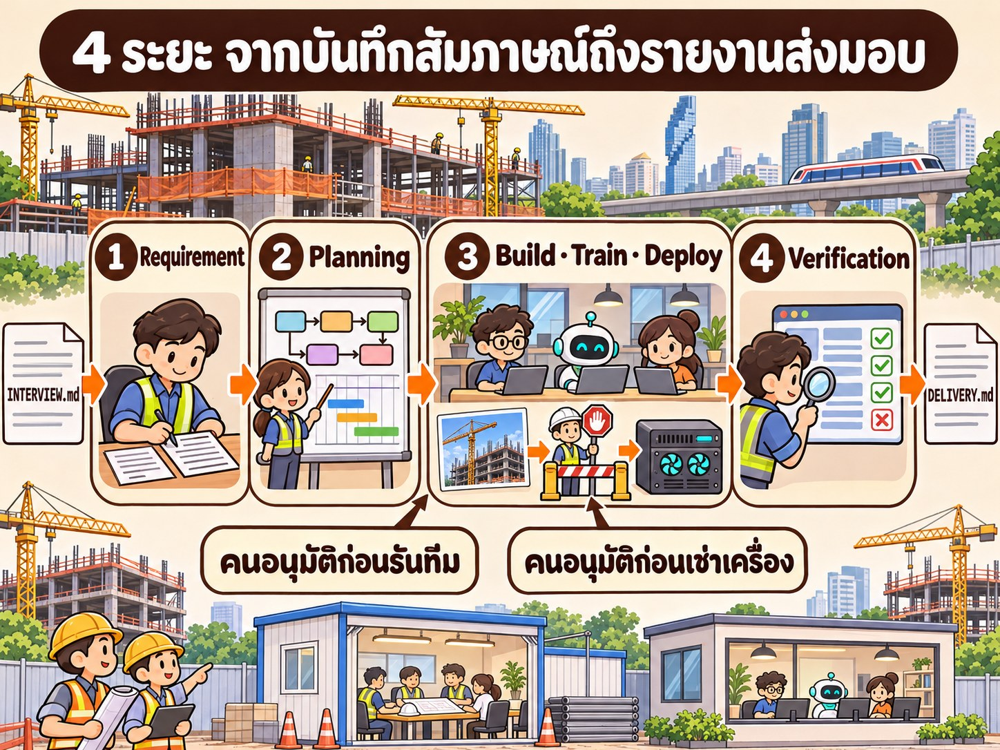
หัวข้อนี้มี 16 ขั้น และทุกขั้นคือ 1 พรอมต์
ก่อนเริ่ม LAB มีภาคพื้นฐาน: เรื่องราวของลูกค้า การสัมภาษณ์ Dataset โมเดล และระบบที่จะส่งมอบ
วิธีใช้สไลด์ชุดนี้
เลื่อนหน้า
กด → หรือ Space เพื่อไปหน้าถัดไป และ ← เพื่อย้อนกลับ
สารบัญและเต็มจอ
กด O เพื่อเปิดสารบัญ กด F เพื่อเต็มจอ และคลิกภาพเพื่อขยาย
คัดลอกพรอมต์
ปุ่ม คัดลอกพรอมต์ทั้งหมด คัดลอกพรอมต์ตรงตัวอักษรกับ README
ตรวจผลของคุณ
หน้า ตรวจผลของคุณ ติ๊กได้ และมีผลของผู้สอนให้เทียบ
เรื่องราวของลูกค้า
บริษัท ไทยมั่นคงก่อสร้าง รับเหมาอาคารสูง มีไซต์งาน 3 แห่งในกรุงเทพฯ
เช้าและบ่าย: หัวหน้างานเดินถ่ายรูปวันละ 2 รอบ รอบละ 40–50 รูป แล้วส่งเข้ากลุ่ม LINE
ลูกค้า 3 คนพูดถึงระบบเดียวกันจากคนละมุมINTERVIEW.md
คุณวิชัย
ผู้จัดการความปลอดภัย
- "อยากให้อัปโหลดรูปแล้วระบบบอกเลยว่ารูปไหนมีคนไม่ใส่หมวก … ผมจะได้ดูเฉพาะรูปที่มีปัญหา"
- "ไม่เกินครึ่งนาทีต่อรูปก็พอรับได้"
- "10 รูปที่มีคนไม่ใส่หมวก ต้องจับได้อย่างน้อย 8 รูป"
คุณนภา
หัวหน้างานไซต์สาทร
- "ขออัปโหลดทีละหลายรูปนะคะ เดินรอบหนึ่งได้ 40–50 รูป"
- "กลับมาดูอีกทีสัก 5 นาทีก็ได้ ขอแค่เห็นว่างานยังอยู่ในคิว ไม่ได้หายไป"
- "หนูขอกดแก้ผลได้ว่ารูปนี้จริง ๆ ผ่าน"
คุณธนา
ฝ่ายไอที
- "รูปมีหน้าคนงาน ห้ามเปิดเป็นสาธารณะ API ต้องมี key"
- "ขอเริ่มจากใบเดียวก่อน … ช้าหน่อยได้ แต่รูปห้ามหาย"
ภาพบุคคลเป็นภาพจำลอง
ความต้องการ 3 ข้อดึงระบบเดียวไปคนละทาง
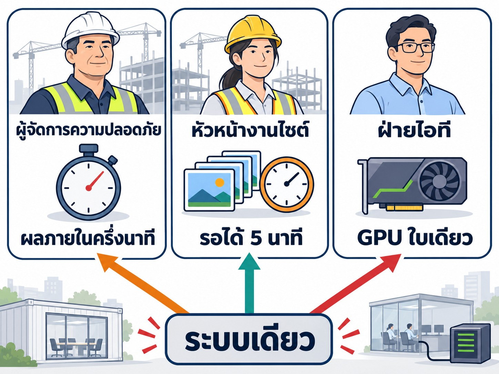
Dataset คือภาพหน้างานก่อสร้างที่มีกรอบระบุวัตถุ 10 คลาสขั้นที่ 7
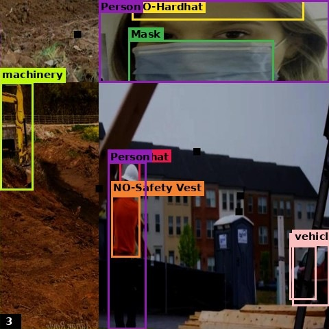
2 0.44 0.24 0.08 0.11 หมายถึง คลาสที่ 2 (NO-Hardhat) · จุดกึ่งกลางกรอบ (x, y) · ความกว้างและความสูง ทุกค่าเป็นสัดส่วน 0–1 ของภาพส่วนหนึ่งของภาพตัวอย่างจริง · ภาพเต็ม: results/dataset_samples.jpg
YOLO11s รับภาพ แล้วตอบเป็นกรอบ ชื่อคลาส และค่าความมั่นใจขั้นที่ 8
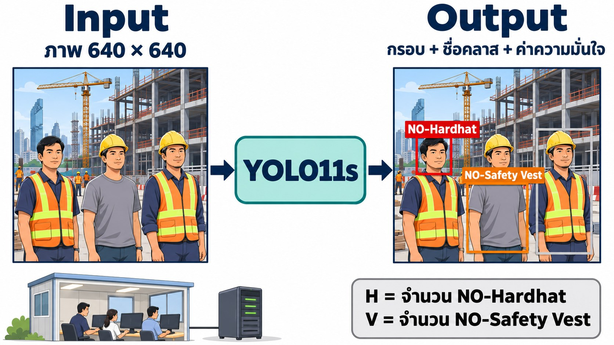
NO-Hardhat ให้ค่า H และ NO-Safety Vest ให้ค่า Vระบบมี 2 ฝั่ง: เว็บอยู่บนเครื่องของเรา งานตรวจภาพอยู่บนเครื่อง GPU ที่เช่า
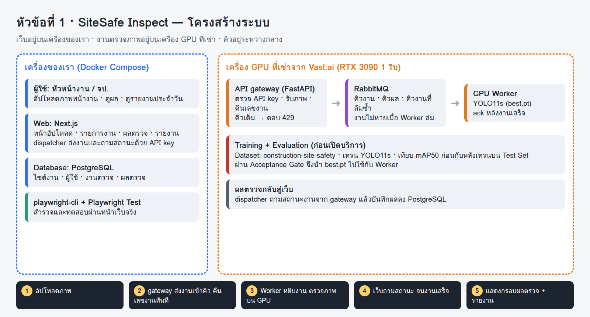
แต่ละส่วนต่อยอดจากบทเรียนก่อนหน้า: โมเดล จาก LAB 1 · คิวงาน จาก LAB 8 · เว็บ จาก Sabai Spa · การทดสอบ จาก Test Plan from Exploration
คนตัดสินใจ หัวหน้าทีมสั่งงาน และทีม AI เขียนโค้ด
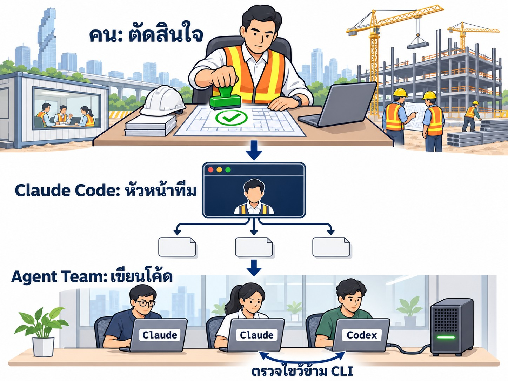
16 ขั้น 16 พรอมต์
เริ่มจากบันทึกการสัมภาษณ์ไฟล์เดียว โค้ดทุกไฟล์ทีม AI เขียนเอง
ก่อนเริ่ม ให้เตรียมโฟลเดอร์ Claude Code container และเครื่องมือทดสอบ
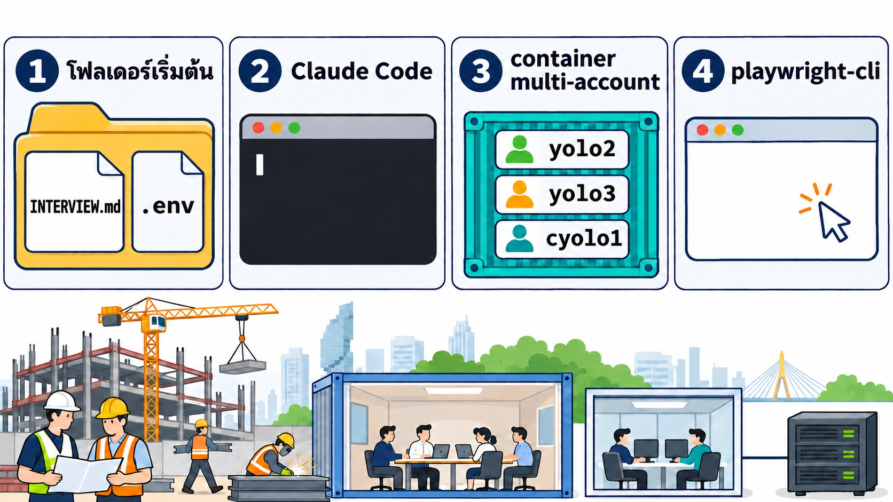
INTERVIEW.md และไฟล์ .env เอกสารและโค้ดทุกไฟล์เกิดจากพรอมต์01_sitesafe_inspect พรอมต์ทั้งหมดอยู่ใน PROMPTS.mdmulti-account มีบัญชี yolo2 yolo3 cyolo1 (และ yolo1 ในขั้นที่ 6) กับสกิล dag-planner, agent-team และ vastaiจากคำพูดเป็น Requirement
ขั้นที่ 1–3: ลูกค้าพูดว่าอะไร ใครต้องการอะไร ระบบต้องทำอะไร และระบบมีส่วนใดบ้าง
ทุก Requirement ต้องย้อนกลับถึงคำพูดของลูกค้าได้
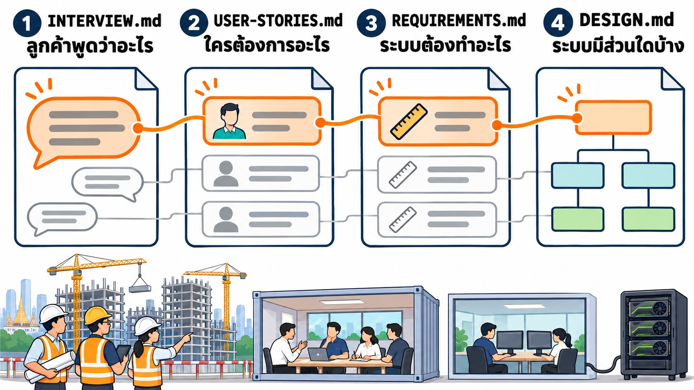
ตัวอย่างจริง 1 เส้นทาง: คำพูดของคุณวิชัยกลายเป็น BR-01 ถึง BR-03
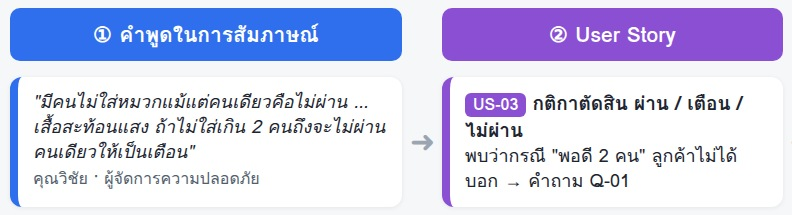
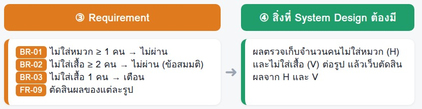
แถวบนสุดของแผนภาพจริง ตัดเป็น 2 ช่วง · ภาพเต็ม 3 เส้นทาง: image/trace.png
User Story จากบันทึกการสัมภาษณ์
ผลจริงของผู้สอน: (ประมาณ 3 นาที) · User Story ระดับ Must 16 · User Story ระดับ Should 4 · User Story ระดับ Could 0
User Story ทุกข้ออ้างคำพูดของลูกค้า เช่น US-03 อ้างคำพูดของคุณวิชัยตรงตัว
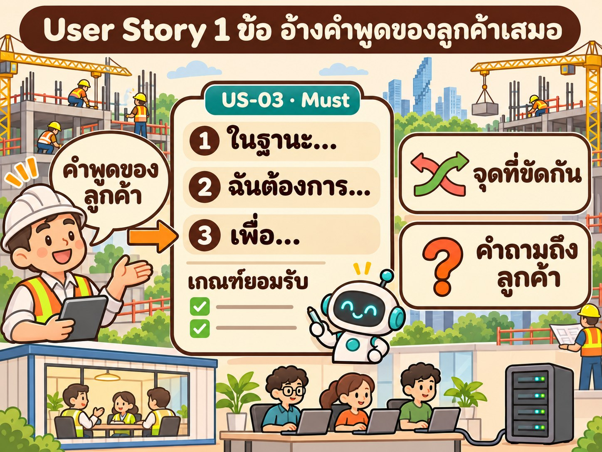
US-03 · กติกาตัดสิน ผ่าน / เตือน / ไม่ผ่าน — Must
ในฐานะ ผู้จัดการความปลอดภัย ฉันต้องการ ให้ระบบตัดสินแต่ละรูปตามกติกาของบริษัท เพื่อ ให้ผลตรงกับเกณฑ์ที่ใช้สั่งงานจริง
ที่มา: คุณวิชัย — "มีคนไม่ใส่หมวกแม้แต่คนเดียวคือไม่ผ่าน ส่วนเสื้อสะท้อนแสง ถ้าไม่ใส่เกิน 2 คนในรูปเดียวถึงจะไม่ผ่าน คนเดียวให้เป็นเตือน"
พรอมต์ · ขั้นที่ 1 · User StoryCopy & Paste
01_sitesafe_inspectพรอมต์ทั้งหมด 7 บรรทัดจากบันทึกการสัมภาษณ์ลูกค้าใน ./INTERVIEW.md เขียน User Story ไว้ที่ ./docs/USER-STORIES.md
1. เขียนรูปแบบ "ในฐานะ… ฉันต้องการ… เพื่อ…" ให้ครบทุกบทบาทที่ลูกค้าพูดถึง ทุกข้อมีรหัส US-01… ระดับ Must / Should / Could และเกณฑ์ยอมรับที่ตรวจได้
2. ทุกข้อต้องอ้างคำพูดในบันทึกที่เป็นที่มา ห้ามเพิ่มความต้องการที่ลูกค้าไม่ได้พูด
3. รวบรวมจุดที่ลูกค้าพูดขัดกันเอง และคำถามที่ต้องถามลูกค้าเพิ่ม เป็น 2 ตารางท้ายไฟล์
4. แยกสิ่งที่ลูกค้าบอกว่ายังไม่ทำในรุ่นแรกไว้ในหัวข้อ "นอกขอบเขต"
(ยังไม่ออกแบบระบบ ยังไม่เขียนโค้ด)
สรุปเป็นตารางภาษาไทย: จำนวน User Story แยกตามระดับ · จำนวนจุดที่ขัดกัน · จำนวนคำถามตรวจผลของคุณ · ขั้นที่ 1 · User StoryChecklist
ผลจริง: User Story 20 ข้อ ไม่มีข้อระดับ Could และพบคำถามถึงลูกค้า 14 ข้อประมาณ 3 นาที
Requirement
ผลจริงของผู้สอน: (ประมาณ 3 นาที): FR 22 ข้อ · BR 7 ข้อ · NFR 8 ข้อ · ข้อสมมติ 14 ข้อ
Business Rule ต้องมีเส้นแบ่งที่ตรวจได้ ทั้งต่ำกว่า เท่ากับ และสูงกว่า
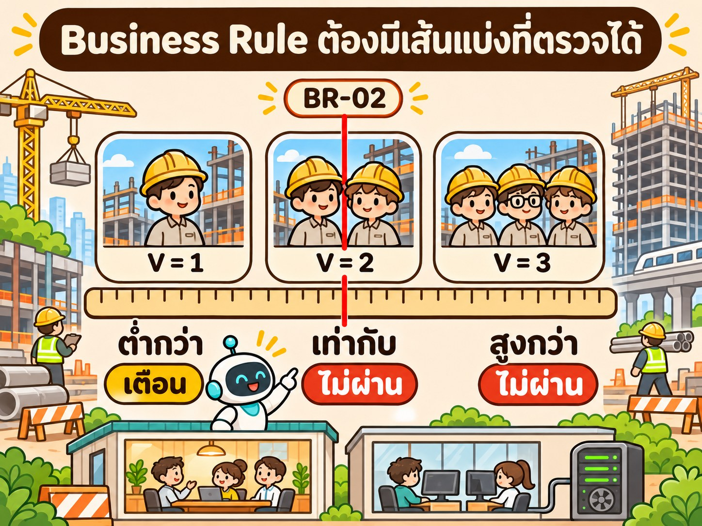
พรอมต์ · ขั้นที่ 2 · RequirementCopy & Paste
01_sitesafe_inspectพรอมต์ทั้งหมด 8 บรรทัดจาก User Story ใน ./docs/USER-STORIES.md เขียน Requirement ไว้ที่ ./docs/REQUIREMENTS.md
1. Functional Requirement (FR-01…) ทุกข้ออ้างรหัส User Story
2. Business Rule (BR-01…) ทุกข้อเป็นตัวเลขที่ตรวจได้ พร้อมค่าตัวอย่างที่ ต่ำกว่า / เท่ากับ / สูงกว่า เส้นแบ่ง
3. Non-functional Requirement (NFR-01…) ให้มีอย่างน้อย 5 เรื่อง: เกณฑ์ของโมเดล · SLO ของเวลารอผล · ความจุเมื่อรูปเข้าพร้อมกัน 3 ไซต์ · รูปห้ามหาย · ความเป็นส่วนตัวของรูป
4. เกณฑ์ของโมเดล: แปลงคำว่า "10 รูปที่มีคนไม่ใส่หมวก ต้องจับได้ 8 รูป" เป็นตัวชี้วัดที่วัดได้บน Test Set
5. จุดที่ลูกค้าขัดกันเอง ให้เลือกทางที่เสี่ยงน้อยที่สุด แล้วบันทึกเป็น "ข้อสมมติ" พร้อมเหตุผล
(ยังไม่เขียนโค้ด)
สรุปเป็นตารางภาษาไทย: จำนวน FR · BR · NFR · ข้อสมมติ และเกณฑ์ของโมเดลกับ SLO ที่ใช้ตรวจผลของคุณ · ขั้นที่ 2 · RequirementChecklist
ผลจริง: Requirement 3 ชนิด และข้อสมมติ 14 ข้อที่ต้องให้ลูกค้ายืนยันประมาณ 3 นาที
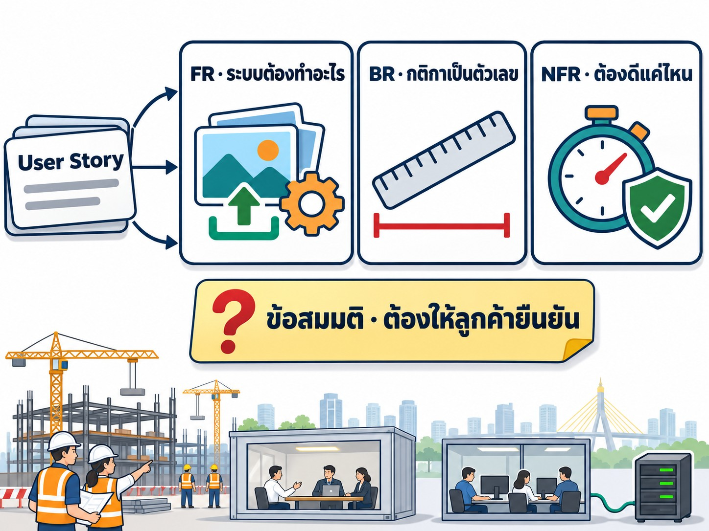
BR ทุกข้อมีค่าตัวอย่างต่ำกว่า เท่ากับ และสูงกว่าเส้นแบ่งตารางหลัก
H = จำนวนคนไม่ใส่หมวก · V = จำนวนคนไม่ใส่เสื้อสะท้อนแสง
| รหัส | กติกา | ต่ำกว่าเส้นแบ่ง | เท่ากับ | สูงกว่า |
|---|---|---|---|---|
| BR-01 | H ≥ 1 → ไม่ผ่าน | H = 0 → ดูกติกาถัดไป | H = 1 → ไม่ผ่าน | H = 2 → ไม่ผ่าน |
| BR-02 | H = 0 และ V ≥ 2 → ไม่ผ่าน | V = 1 → เตือน | V = 2 → ไม่ผ่าน | V = 3 → ไม่ผ่าน |
| BR-04 | อัตราผ่านของไซต์ต่อวัน ต่ำกว่า 90% → สีแดง | 269 ÷ 300 = 89.67% → แดง | 270 ÷ 300 = 90.00% → ไม่แดง | สูงกว่า 90% → ไม่แดง |
| BR-05 | ขนาดไฟล์ต่อรูป ≤ 15 MB | 14.9 MB → รับ | 15.0 MB → รับ | 15.1 MB → ปฏิเสธ |
คำว่า "10 รูปต้องจับได้ 8 รูป" กลายเป็น Image-level Recall ≥ 0.80docs/REQUIREMENTS.md
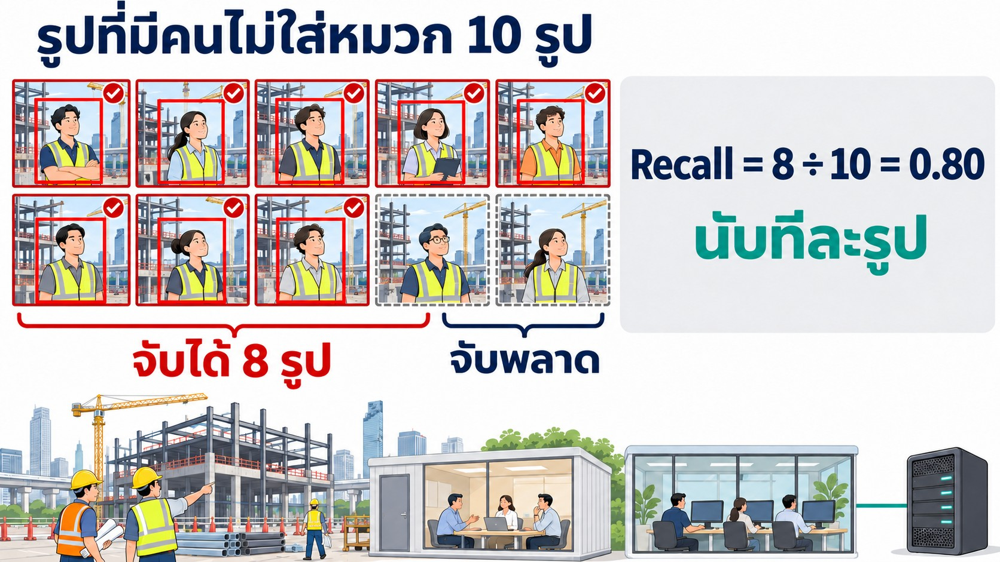
ตัวอย่าง FR และ NFR: ระบบต้องทำอะไรได้ และต้องดีแค่ไหนdocs/REQUIREMENTS.md
FR-01 · จาก US-06
ให้หัวหน้างานเลือกและส่งรูปหลายรูปในการอัปโหลดครั้งเดียว
FR-05 · จาก US-07
ตรวจรูปต่อไปจนเสร็จหลังผู้ใช้กดส่ง แม้ผู้ใช้ปิดหน้าจอหรือไปหน้าอื่น
FR-09 · จาก US-03
ตัดสินผลของแต่ละรูปเป็น "ผ่าน" / "เตือน" / "ไม่ผ่าน" ตาม BR-01 ถึง BR-03
NFR-01 · เกณฑ์ของโมเดล
Image-level Recall คลาส "ไม่ใส่หมวก" บน Test Set ≥ 0.80 และ Precision ≥ 0.80
NFR-02 · SLO ของเวลารอผล
ภาระปกติ (ไม่เกิน 50 รูป): p95 ≤ 30 วินาที · ช่วงเร่งด่วน (150 รูป): p95 ≤ 300 วินาที
NFR-04 · รูปห้ามหาย
รูปที่ระบบรับแล้วต้องจบที่ "เสร็จแล้ว" หรือ "ตรวจไม่สำเร็จ" ทุกรูป
FR ตัวอย่าง 3 จาก 22 ข้อ (แถวบน) · NFR 3 จาก 8 ข้อ (แถวล่าง)
System Design และข้อมูลทดสอบ
ผลจริงของผู้สอน: (ประมาณ 8 นาที): ตาราง 7 · API 18 · ข้อมูลทดสอบ 69 แถว · คำถามที่การออกแบบยังตอบไม่ได้ 8 ข้อ
System Design: Requirement แต่ละข้อมีส่วนของระบบที่รับผิดชอบdocs/DESIGN.md
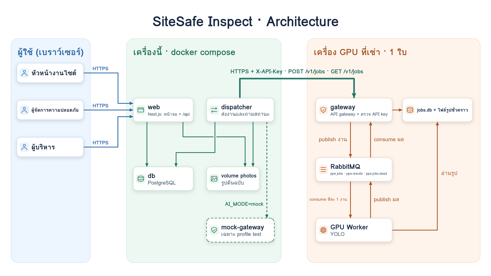
dispatcher แยกจากเว็บ ส่งรูปและถามสถานะเอง429 เว็บเก็บรูปไว้ที่ "รอคิว" แล้วส่งใหม่X-API-Key และค่า key ไม่ถูกส่งไปที่เบราว์เซอร์พรอมต์ · ขั้นที่ 3 · System Design และข้อมูลทดสอบCopy & Paste
01_sitesafe_inspectพรอมต์ทั้งหมด 10 บรรทัดจาก Requirement ใน ./docs/REQUIREMENTS.md ออกแบบระบบไว้ที่ ./docs/DESIGN.md และข้อมูลทดสอบไว้ที่ ./docs/TEST-DATA.md
ระบบมี 2 ฝั่ง: เว็บ Next.js + PostgreSQL รันด้วย docker compose บนเครื่องนี้ และฝั่ง AI บนเครื่อง GPU ที่เช่า 1 ใบ ซึ่งมี API gateway, RabbitMQ และ GPU Worker ที่ใช้โมเดล YOLO
1. แผนภาพ Mermaid 4 ภาพ: Architecture · ER Diagram · ลำดับการทำงานตั้งแต่อัปโหลดรูปจนเห็นผล · สถานะของงาน
2. API Contract ระหว่างเว็บกับ gateway: ส่งรูป · ถามสถานะ · คิวเต็มตอบอย่างไร · ใช้ API key อย่างไร
3. การออกแบบคิว: งานต้องไม่หายเมื่อ Worker ล่ม และคิวยาวเกินกำหนดต้องปฏิเสธงานใหม่
4. เว็บต้องมี /api/health ทางรีเซ็ตข้อมูลทดสอบ และ data-testid ทุกปุ่มและช่องกรอก
5. เว็บต้องมีโหมด BUG_MODE=1 ที่ทำให้ Business Rule ผิด 3 ข้อ (เลือกเอง) เก็บรายชื่อ 3 ข้อนั้นไว้ที่ ./docs/BUGS-SECRET.md ที่เดียว
6. ข้อมูลทดสอบ: ผู้ใช้ทุกบทบาท ไซต์งาน และกรณีขอบของทุก Business Rule พร้อมผลที่คาดหวังที่คำนวณให้ดู
(ยังไม่เขียนโค้ด)
สรุปเป็นตารางภาษาไทย: จำนวนตาราง · จำนวน API · จำนวนแถวข้อมูลทดสอบ · คำถามที่การออกแบบยังตอบไม่ได้ตรวจผลของคุณ · ขั้นที่ 3 · System Design และข้อมูลทดสอบChecklist
BUGS-SECRET.md จนถึงขั้นที่ 13ผลจริง: ออกแบบเสร็จโดยยังไม่มีโค้ดสักบรรทัด และยังมีคำถาม 8 ข้อที่ต้องวัดจริงประมาณ 8 นาที
งาน 1 งานมี 4 สถานะ และทุกเส้นทางจบที่ เสร็จแล้ว หรือ ตรวจไม่สำเร็จ
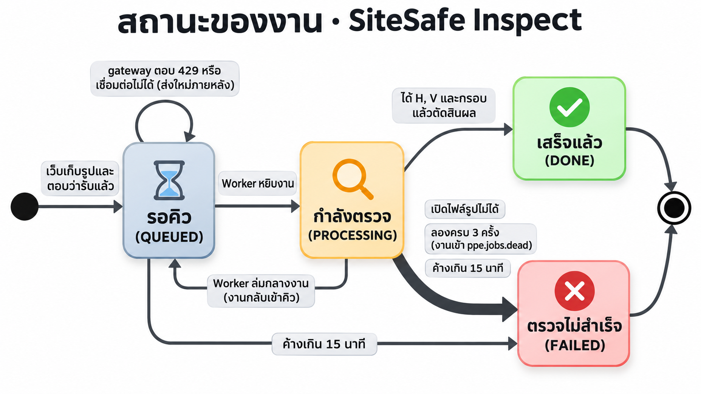
ดูเส้นที่ย้อนกลับ: Worker ล่มกลางงาน งานกลับเข้าคิว · คิวมี 3 คิว: คิวงาน คิวผล และคิวของงานที่ลองครบ 3 ครั้งแล้วยังไม่สำเร็จ
โหมดจำลองฝั่ง AI ทำให้ทดสอบ Business Rule ได้โดยไม่ต้องเช่า GPUอ่านผล · README
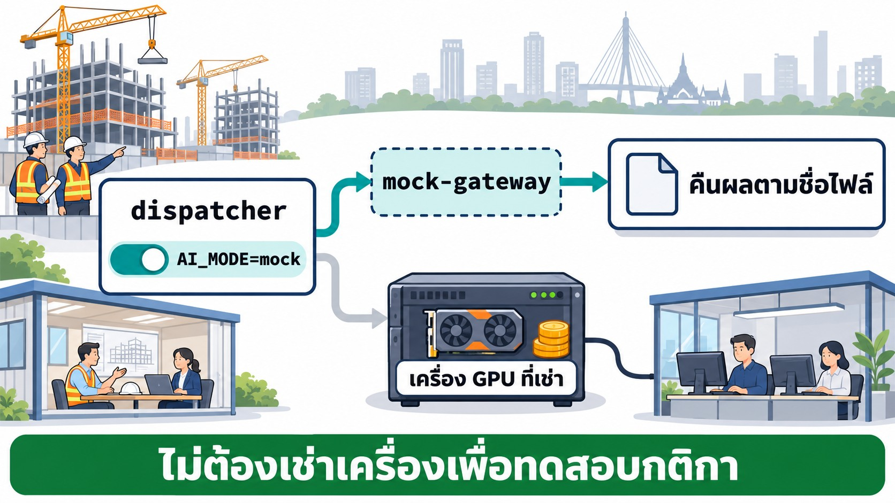
AI_MODE=mock) ที่คืนผลตามชื่อไฟล์ เพื่อทดสอบ Business Rule ได้ผลแน่นอนโดยไม่ต้องเช่า GPUแตกงานเป็นบล็อก วาด DAG และ Gantt
เอกสารของระยะ A บอกว่า "ต้องสร้างอะไร" ระยะนี้ตอบว่า "แบ่งงานอย่างไร ใครทำอะไร เมื่อไร"
ผลจริงของผู้สอน: (ประมาณ 4 นาที): 10 บล็อก · Critical Path ยาว 11.1 ล้านโทเคน · เวลารวมของแผนประมาณ 112.5 นาที
DAG ของแผน: 10 บล็อก และ Critical Path ผ่าน B03 ที่ใช้สกิล reviewplan/dag.png
cyolo · S
image · S
yolo · L
cyolo · M
cyolo · M
cyolo · M
review · L
yolo · L
cyolo · M
yolo · L
review: ถ้าบล็อกนี้ผิด ผลความปลอดภัยถูกตัดสินผิด หรือรูปของไซต์อื่นรั่วพรอมต์ · ขั้นที่ 4 · แตกงานเป็นบล็อก วาด DAG และ GanttCopy & Paste
01_sitesafe_inspectพรอมต์ทั้งหมด 10 บรรทัดทำงานใน container `multi-account` ด้วยสกิล dag-planner
โจทย์: สร้างระบบตาม Requirement และ System Design ในโฟลเดอร์ ./docs
1. แตกงานเป็น 8–10 บล็อก ชื่อแผน sitesafe
2. ต้องครอบคลุม: โครงโปรเจกต์ · ฐานข้อมูลและข้อมูลตั้งต้น · API gateway กับคิว RabbitMQ · GPU Worker · โค้ด Training และ Evaluation ของโมเดล · หน้าเว็บ · โลโก้ · รวมระบบและทดสอบเบื้องต้น
3. บล็อกที่ผิดแล้วเสียหายมากที่สุด 1 บล็อก ให้ใช้สกิล review (ผู้ทำกับผู้ตรวจคนละ CLI) บล็อกอื่นใช้ yolo, cyolo หรือ image
4. ให้เวลาทำงานต่อบล็อกพอสำหรับงานจริง: ขนาด S 15 นาที · M 30 นาที · L 45 นาที
5. วางแผนด้วยบัญชี yolo2, yolo3, cyolo1 เท่านั้น จำนวน agent พร้อมกันไม่เกิน 3
6. คัดลอกไฟล์บล็อก ภาพ DAG ภาพ Gantt และไฟล์แผน มาไว้ที่ ./plan
(วางแผนเท่านั้น ห้ามรันจริง ห้ามแสดงข้อมูลล็อกอินของบัญชี)
สรุปเป็นตารางภาษาไทย: บล็อก · สกิล · ขนาด · รอบล็อกใด · บัญชี · เริ่ม–จบ (นาที) แล้วบอก Critical Path และเวลารวมของแผนตรวจผลของคุณ · ขั้นที่ 4 · DAG และ GanttChecklist
ผลจริง: แผน 10 บล็อก ใช้เวลารวมประมาณ 112.5 นาที และ yolo3 ไม่ได้งานประมาณ 4 นาที
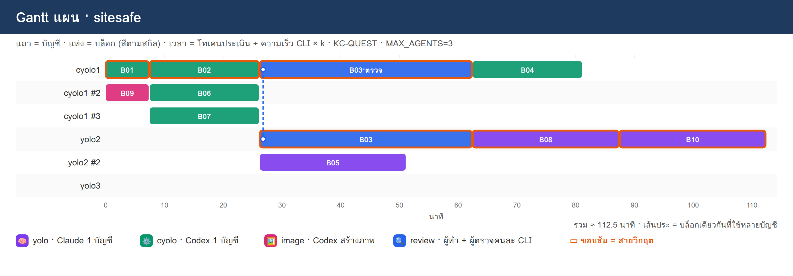
yolo3 อยู่ในรายชื่อแต่ไม่ได้งาน เพราะ KC-QUEST ให้คะแนน yolo2 สูงกว่าทุกบล็อกฝั่ง Claude (โควตารอบ 5 ชั่วโมงของ yolo3 ถูกใช้ไปแล้ว 36%) yolo3 จึงเป็นบัญชีสำรองเมื่อ yolo2 ล้มแต่ละแถวคือบัญชี และแต่ละแท่งคือบล็อก · ภาพจริง plan/gantt-plan.png
สร้างระบบ เทรนโมเดล และเปิดบริการ
ขั้นที่ 5–9: ทีม AI เขียนโค้ด เช่า GPU เทรนโมเดล และ Deployment
Agent Team สร้างระบบตามแผน
ผลจริงของผู้สอน: (39 นาที · 1,333,708 โทเคน): เสร็จ 6 จาก 10 บล็อก · 1 บล็อกไม่ผ่านการตรวจ · 3 บล็อกถูกบล็อก
ทีม AI รันแผนเดิมจริง แล้วรายงานแผนเทียบของจริงตามจริง
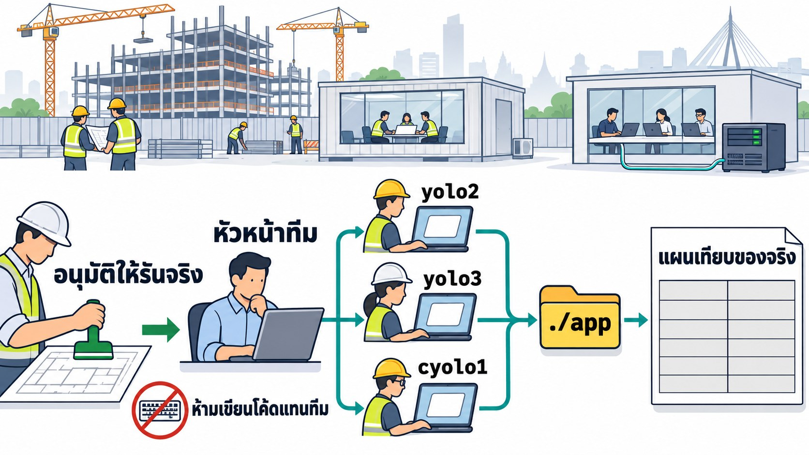
./appพรอมต์ · ขั้นที่ 5 · Agent Team สร้างระบบตามแผนCopy & Paste
01_sitesafe_inspectพรอมต์ทั้งหมด 8 บรรทัดทำงานใน container `multi-account` ด้วยสกิล dag-planner
ใช้แผน sitesafe ที่มีอยู่แล้ว ห้ามวางแผนใหม่ ผมอนุมัติให้รันจริง
1. ส่งเอกสารในโฟลเดอร์ ./docs ให้ทีมเปิดดูได้ แล้วรันแผนจริงด้วยบัญชี yolo2, yolo3, cyolo1 เท่านั้น
2. รันจบแล้วออกรายงานแผนเทียบของจริง
3. คัดลอกไฟล์ที่ทีมสร้างมาไว้ที่ ./app และคัดลอกรายงาน ภาพ Gantt ของจริง กับภาพเทียบแผน มาไว้ที่ ./plan
4. บล็อกที่ล้มหรือถูกบล็อก ให้รายงานตามจริง ห้ามเขียนโค้ดแทนทีม
(ห้ามแสดงข้อมูลล็อกอินของบัญชี ไม่ต้อง commit)
สรุปเป็นตารางภาษาไทย: บล็อก · บัญชีตามแผน · บัญชีจริง · นาทีตามแผน · นาทีจริง · โทเคน · สถานะ แล้วบอกเวลารวมและโทเคนรวมตรวจผลของคุณ · ขั้นที่ 5 · Agent Team สร้างระบบChecklist
รอบแรกเสร็จ 6 จาก 10 บล็อก: B03 ไม่ผ่านการตรวจ และอีก 3 บล็อกที่รอ B03 ไม่ได้รันplan/REPORT.md
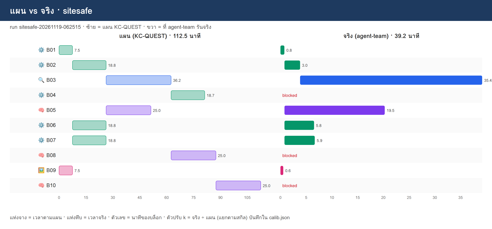
ซ้าย: แผน 112.5 นาที · ขวา: ของจริง 39.2 นาที · แถวที่ขึ้นคำว่า blocked คือบล็อกที่ไม่ได้รัน
B03 ที่ไม่ผ่านการตรวจ ใช้โทเคน 803,710 จาก 1,333,708 ของรอบแรกโทเคนต่อบล็อก · README
review: ผู้ทำแก้ 2 รอบ ผู้ตรวจ (Codex) ยังไม่อนุมัติ จึงจบที่ "ไม่ผ่านการตรวจ" ผู้ตรวจรายงานว่าเทสต์ผ่าน 117/117 แต่ยังขอแก้ 2 เรื่อง: เวลาที่ตั้งจากทางรีเซ็ตไม่คงที่ (อัปโหลดหลัง 23:59:59 หนึ่งวินาทีได้วันที่ของวันถัดไป) และผู้ทำไปแก้ไฟล์ฐานข้อมูลของบล็อก B02บล็อกเดียวที่ไม่ผ่าน หยุดงานท้ายแผนทั้งสายอ่านผล · README
เสร็จ
เสร็จ
เสร็จ
เสร็จ
เสร็จ
เสร็จ
ไม่ผ่านการตรวจ
ถูกบล็อกเพราะ B03
ถูกบล็อกเพราะ B03
ถูกบล็อกเพราะ B04, B08
cyolo คือ 0.24 ของ yolo คือ 0.78 แผนรอบถัดไปจะใช้ค่านี้รันต่อเฉพาะบล็อกที่ยังไม่เสร็จ
ทำขั้นนี้เมื่อขั้นที่ 5 มีบล็อกที่ล้มหรือถูกบล็อก · ถ้าทุกบล็อกเสร็จแล้วให้ข้าม
ผลจริงของผู้สอน: (57 นาที · 1,166,258 โทเคน): ครบ 10 จาก 10 บล็อก
รันต่อเฉพาะ 4 บล็อกที่ยังไม่เสร็จ และไม่รันซ้ำ 6 บล็อกที่เสร็จแล้ว
เสร็จ (ไม่รันซ้ำ)
เสร็จ (ไม่รันซ้ำ)
เสร็จ (ไม่รันซ้ำ)
เสร็จ (ไม่รันซ้ำ)
เสร็จ (ไม่รันซ้ำ)
เสร็จ (ไม่รันซ้ำ)
รันต่อ · เสร็จ
รันต่อ · เสร็จ
รันต่อ · เสร็จ
รันต่อ · เสร็จ
พรอมต์ · ขั้นที่ 6 · รันต่อเฉพาะบล็อกที่ยังไม่เสร็จCopy & Paste
01_sitesafe_inspectพรอมต์ทั้งหมด 9 บรรทัดทำงานใน container `multi-account` ด้วยสกิล agent-team และ dag-planner
แผน sitesafe รันไปแล้ว 1 รอบ มีบล็อกที่ไม่ผ่านการตรวจและบล็อกที่ถูกบล็อก ผมอนุมัติให้รันต่อ (ถ้าทุกบล็อกเสร็จแล้ว ให้ข้ามขั้นนี้)
1. รันต่อ run เดิมเฉพาะบล็อกที่ยังไม่เสร็จ ห้ามเริ่ม run ใหม่ ห้ามรันบล็อกที่เสร็จแล้วซ้ำ
2. บล็อกที่ไม่ผ่านการตรวจ: ให้ผู้ทำแก้ตามข้อที่ผู้ตรวจขอในรอบล่าสุดเท่านั้น ไม่เขียนใหม่ทั้งบล็อก และเพิ่มรอบตรวจเป็น 3
3. ใช้บัญชี yolo1, yolo2, yolo3, cyolo1
4. รันจบแล้วออกรายงานแผนเทียบของจริงใหม่ แล้วคัดลอกไฟล์ของทีมมาไว้ที่ ./app และรายงานกับภาพมาไว้ที่ ./plan
5. บล็อกที่ยังล้ม ให้รายงานตามจริง ห้ามเขียนโค้ดแทนทีม
(ห้ามแสดงข้อมูลล็อกอินของบัญชี ไม่ต้อง commit)
สรุปเป็นตารางภาษาไทย: บล็อก · สถานะรอบแรก · สถานะหลังรันต่อ · บัญชี · นาที · โทเคน แล้วบอกโทเคนรวมของทั้งสองรอบตรวจผลของคุณ · ขั้นที่ 6 · รันต่อChecklist
ผลจริง: ครบ 10 จาก 10 บล็อก แต่โทเคนรวมของสองรอบเกือบ 2.5 ล้านplan/REPORT.md
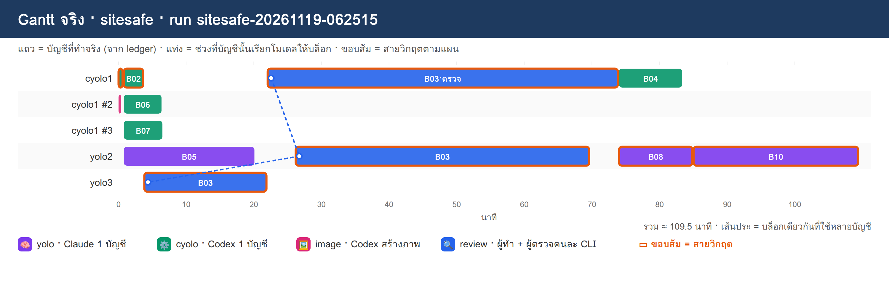
app/Gantt ของจริงหลังรันต่อ: บล็อกทั้ง 10 บล็อกบนบัญชี cyolo1, yolo2 และ yolo3
4 บล็อกที่รันต่อ: สถานะก่อนและหลังREADME
B03 กติกา + สิทธิ์ + API
ไม่ผ่านการตรวจ (2 รอบ) → เสร็จ (อนุมัติรอบที่ 3) · yolo2 (ทำ) · cyolo1 (ตรวจ) · 35.4 + 21.7 นาที
B04 dispatcher + mock-gateway
ถูกบล็อก → เสร็จ · cyolo1 · 9.5 นาที
B08 หน้าเว็บ 8 หน้า
ถูกบล็อก → เสร็จ · yolo2 · 11.0 นาที
B10 รวมระบบ + ทดสอบเบื้องต้น
ถูกบล็อก → เสร็จ · yolo2 · 24.5 นาที
B10 ผ่านเทสต์ด้วยตัวตรวจจำลอง แต่ยังไม่เคยรันบน GPU จริงอ่านผล · README
yolo1) จึงไม่ถูกเรียก: จะเพิ่มบัญชีต้องทำตั้งแต่ตอนวางแผนเช่า GPU และเตรียม Dataset
ผลจริงของผู้สอน: (ประมาณ 11 นาที): RTX 3090 1 ใบ ราคา $0.2215 ต่อชั่วโมง
เช่าเครื่อง GPU 1 ใบ ดาวน์โหลด Dataset แล้วแบ่งเป็น 3 ชุด
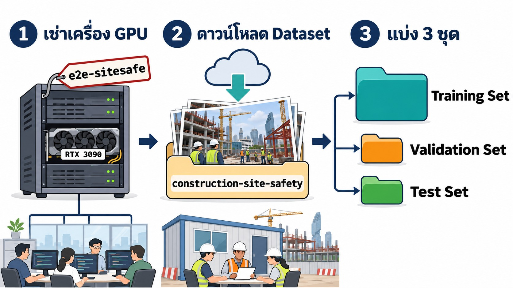
e2e-sitesafeพรอมต์ · ขั้นที่ 7 · เช่า GPU และเตรียม DatasetCopy & Paste
01_sitesafe_inspectพรอมต์ทั้งหมด 7 บรรทัดทำงานใน container `multi-account` โฟลเดอร์ /workspace/vastapp_lab ด้วยสกิล vastai · ใช้ key จากไฟล์ .env ของโฟลเดอร์ปัจจุบัน
1. เช่าเครื่อง RTX 3090 1 ใบ ราคาไม่เกิน $0.30 ต่อชั่วโมง ติดป้าย e2e-sitesafe
2. ดาวน์โหลด Dataset construction-site-safety รุ่น 28 จาก Roboflow ลงเครื่องที่เช่า แล้วนับจำนวนภาพของ Training / Validation / Test Set และจำนวนกรอบของแต่ละคลาส
3. ทำภาพตัวอย่างจาก Training Set 8 รูป เรียงเป็นตาราง วาดกรอบและชื่อคลาสตาม label จริง เก็บกลับมาที่ ./results/dataset_samples.jpg
4. อธิบาย label ของรูป 1 รูปว่าแต่ละบรรทัดหมายถึงอะไร
(ห้ามแสดงค่า key ห้ามแตะเครื่องป้ายอื่น)
สรุปเป็นตารางภาษาไทย: รุ่น GPU · ราคาต่อชั่วโมง · จำนวนภาพแต่ละชุด · คลาสที่ใช้ตัดสินตาม Requirement แล้วบอกว่าเครื่องยังเปิดอยู่ตรวจผลของคุณ · ขั้นที่ 7 · เช่า GPU และเตรียม DatasetChecklist
ผลจริง: RTX 3090 ราคา $0.2215 ต่อชั่วโมง แต่ Test Set มีเพียง 82 ภาพประมาณ 11 นาที
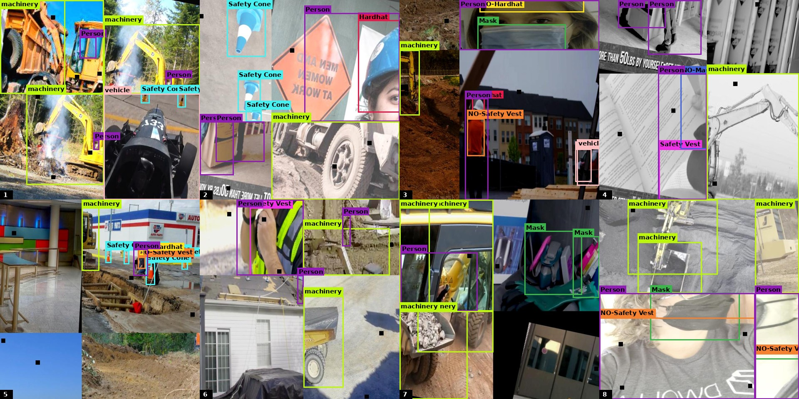
ภาพจริง results/dataset_samples.jpg
เทรนโมเดล และตัดสินด้วย Acceptance Gate
ผลจริงของผู้สอน: (เทรน 8 นาที 55 วินาที · ค่าเช่าถึงตอนนั้นประมาณ $0.09) · Acceptance Gate ยังตัดสินไม่ได้
Acceptance Gate ต้องมีรูปใน Test Set มากพอจึงตัดสินได้
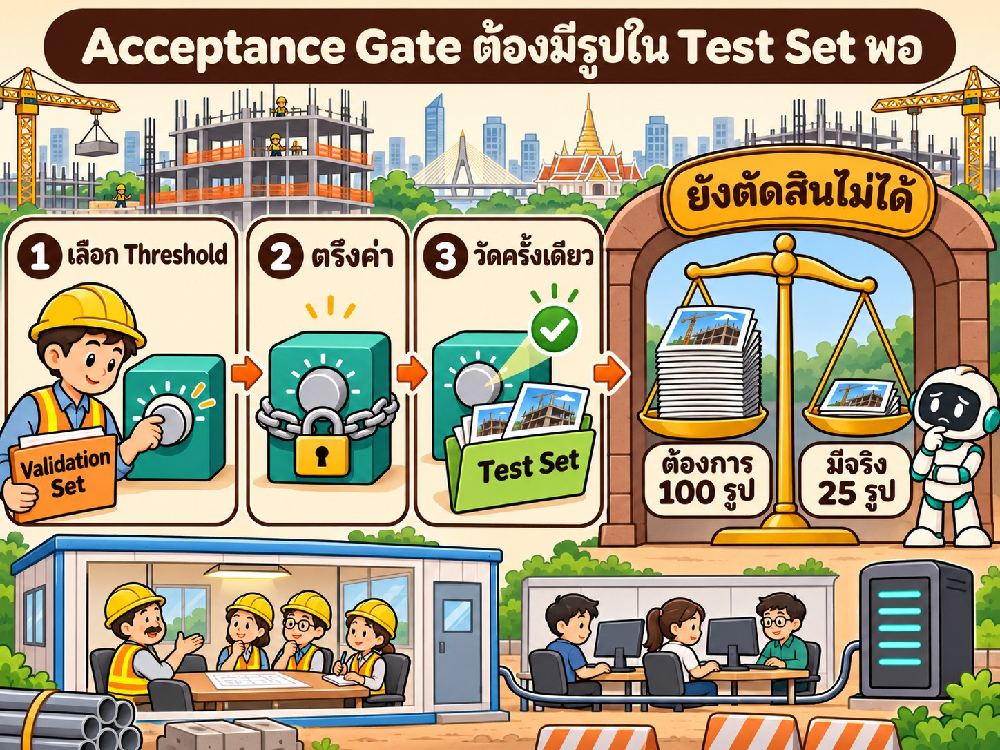
พรอมต์ · ขั้นที่ 8 · เทรนโมเดล และตัดสินด้วย Acceptance GateCopy & Paste
01_sitesafe_inspectพรอมต์ทั้งหมด 7 บรรทัดทำงานใน container `multi-account` โฟลเดอร์ /workspace/vastapp_lab ด้วยสกิล vastai · เครื่องที่ใช้คือเครื่องป้าย e2e-sitesafe
1. นำโค้ด Training และ Evaluation ที่ทีมเขียนไว้ในโฟลเดอร์ ./app/ai/train ไปเทรน YOLO11s ด้วย Dataset ที่เตรียมไว้ 30 Epoch ภาพขนาด 640 seed 0
2. ถ้าโค้ดของทีมรันไม่ได้ ให้แก้ให้น้อยที่สุด แล้วบอกว่าแก้อะไร
3. วัดผลบน Test Set ก่อนเทรนกับหลังเทรน แล้วตัดสินตามเกณฑ์ของโมเดลใน Requirement ว่าผ่าน Acceptance Gate หรือไม่
4. เก็บน้ำหนักโมเดลที่ดีที่สุดไว้บนเครื่อง GPU และเก็บผลวัด กราฟ กับภาพตัวอย่างผลตรวจ กลับมาที่ ./results/model
(ห้ามแสดงค่า key ห้ามแตะเครื่องป้ายอื่น งานต้องทำต่อได้แม้การเชื่อมต่อหลุด)
สรุปเป็นตารางภาษาไทย: ตัวชี้วัด · ก่อนเทรน · หลังเทรน · เกณฑ์ · ผ่านหรือไม่ · เวลาเทรน · ค่าเช่าถึงตอนนี้ แล้วบอกว่าเครื่องยังเปิดอยู่ตรวจผลของคุณ · ขั้นที่ 8 · Training และ Acceptance GateChecklist
Recall ถึงเกณฑ์ที่ขอบพอดี แต่รูปใน Test Set ไม่ครบ จึงยังตัดสินไม่ได้results/model
mAP50 รวม 10 คลาส: ก่อนเทรน 0.011 → หลังเทรน 0.749 (ไม่มีใน Requirement)
Training 30 Epoch: loss ลดลง ส่วน Precision Recall และ mAP50 เพิ่มขึ้น

NO-Safety Vest · ขนาด Test Set) ต้องแก้ 2 ไฟล์เทรน 8 นาที 55 วินาที บน RTX 3090 · ภาพจริง results/model/results.png
ผลตรวจบน Test Set: แถวบนจับถูก (TP) แถวล่างจับพลาด (FN)
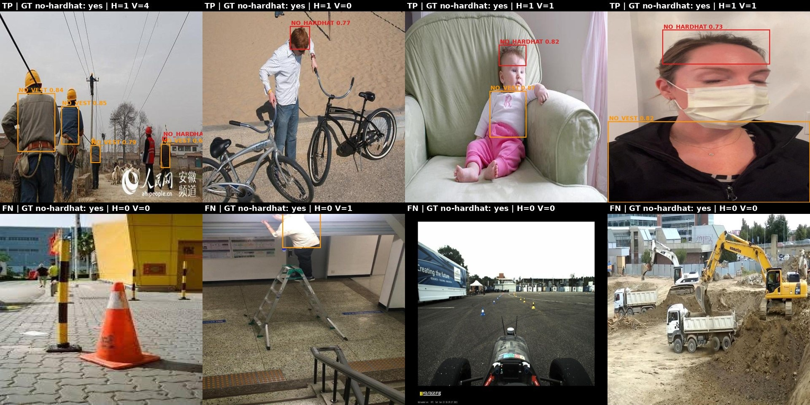
ส่วนหนึ่งของภาพจริง ทุกรูปมีคนไม่ใส่หมวก · ภาพเต็มมีกรณีแจ้งผิด (FP) และกรณีไม่มีคนไม่ใส่หมวก (TN): results/model/examples_test_predictions.jpg
Deployment และทดสอบทั้งเส้นทาง
ผลจริงของผู้สอน: (ประมาณ 22 นาที) · คิว 20 งาน + หยุด Worker กลางงาน: เสร็จก่อนหยุด 6 งาน หลังเปิดใหม่ 14 งาน ครบ 20 งาน หาย 0
ทดสอบทั้งเส้นทาง และหยุด Worker กลางงานเพื่อดูว่างานหายหรือไม่
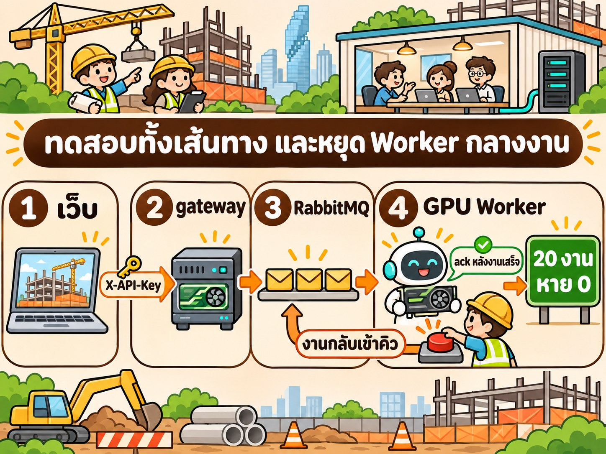
พรอมต์ · ขั้นที่ 9 · Deployment และทดสอบทั้งเส้นทางCopy & Paste
01_sitesafe_inspectพรอมต์ทั้งหมด 8 บรรทัดทำงานใน container `multi-account` โฟลเดอร์ /workspace/vastapp_lab ด้วยสกิล vastai · เครื่องที่ใช้คือเครื่องป้าย e2e-sitesafe
1. บนเครื่อง GPU เปิด RabbitMQ, API gateway และ GPU Worker จากโค้ดในโฟลเดอร์ ./app โดยใช้โมเดลที่เทรนแล้ว ตั้ง API key ใหม่ 1 ตัวแล้วเก็บในไฟล์ .env ของโฟลเดอร์ปัจจุบัน
2. บนเครื่องนี้เปิดเว็บและฐานข้อมูลด้วย docker compose ที่พอร์ต 3410 ให้เว็บเรียก gateway บนเครื่อง GPU
3. ทดสอบทั้งเส้นทาง: ส่งรูปจาก Test Set 5 รูปผ่านหน้าเว็บ รอจนงานเสร็จ แล้วตรวจว่าผลในฐานข้อมูลตรงกับที่ gateway ตอบ
4. ทดสอบคิว: ส่งงาน 20 งานแล้วหยุด Worker กลางงาน เปิดใหม่ แล้วนับว่างานเสร็จครบ 20 งาน
5. ส่วนใดเปิดไม่ได้ ให้แก้โค้ดให้น้อยที่สุด แล้วจดสิ่งที่แก้ไว้ในโฟลเดอร์ ./results/deploy
(ห้ามแสดงค่า key ห้ามแตะเครื่องป้ายอื่น)
สรุปเป็นตารางภาษาไทย: ส่วนของระบบ · ที่อยู่ · สถานะ · ผลทดสอบ แล้วบอกจำนวนงานที่เสร็จหลังหยุด Worker และว่าเครื่องยังเปิดอยู่ตรวจผลของคุณ · ขั้นที่ 9 · DeploymentChecklist
ผลจริง: ทุกส่วนของระบบเปิดได้ และงานไม่หายเมื่อ Worker ถูกหยุดตารางหลัก
| ส่วนของระบบ | ที่อยู่ | ผลทดสอบ |
|---|---|---|
| RabbitMQ | เครื่อง GPU (ไม่เปิดสู่ภายนอก) | คิว 3 คิว เก็บงาน 13 งานไว้ระหว่าง Worker ปิด |
| API gateway | เครื่อง GPU ผ่าน HTTPS | ไม่มี key ตอบ 401 · มี key ตอบ 200 |
| GPU Worker | เครื่อง GPU · RTX 3090 | เฉลี่ย 22 มิลลิวินาทีต่อรูป |
| เว็บ + dispatcher + PostgreSQL | เครื่องนี้ พอร์ต 3410 | /api/health ปกติทุกช่อง |
| ส่งรูป 5 รูปทั้งเส้นทาง | เว็บ → gateway → คิว → Worker → เว็บ | เสร็จใน 9.1 วินาที ผลในฐานข้อมูลตรงกับ gateway 5/5 |
| คิว 20 งาน + หยุด Worker กลางงาน | เสร็จก่อนหยุด 6 งาน หลังเปิดใหม่ 14 งาน ครบ 20 งาน หาย 0 |
NO-Safety Vest ของ Worker) ถ้าไม่แก้ Worker หยุดตั้งแต่เริ่ม · งานที่กำลังตรวจตอน Worker ถูกหยุดถูกส่งซ้ำ 1 ครั้งแล้วเสร็จ ไม่มีผลซ้ำ: การออกแบบ "ack หลังงานเสร็จ" ของขั้นที่ 3 ทำงานจริงGPU ใช้ 22 มิลลิวินาทีต่อรูป แต่ผู้ใช้รอหลายวินาที เพราะคอขวดอยู่ที่ dispatcherอ่านผล · README
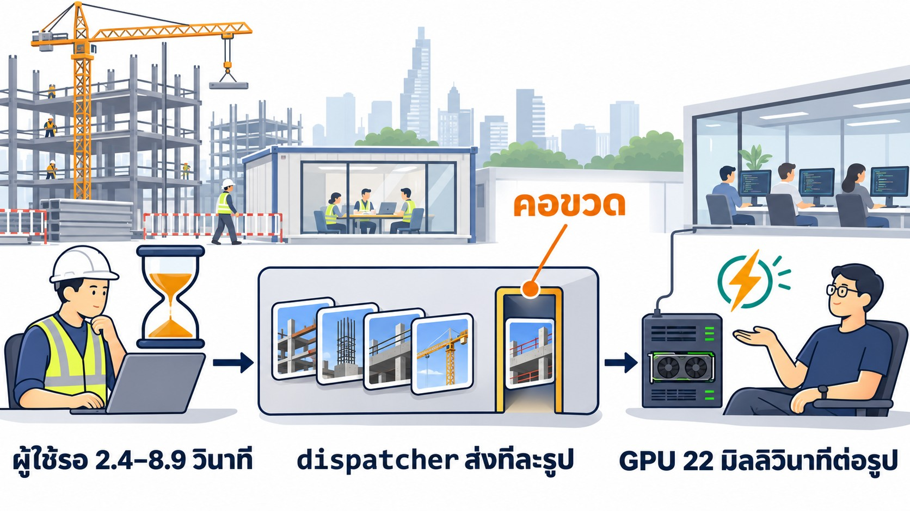
พิสูจน์ว่าระบบทำตาม Requirement
ระยะ C จบที่ "ระบบเปิดได้" ระยะนี้ตอบว่า "ระบบทำถูกตามที่ลูกค้าขอหรือไม่" โดยผู้ทดสอบดูได้แค่ Requirement กับหน้าเว็บ ไม่เปิดโค้ด
Test Charter และ Exploration พร้อมกัน
ผลจริงของผู้สอน: (ประมาณ 11 นาที): ลอง 53 กฎ · ✅ 46 · ⚠️ 6 · ❌ 1
subagent 4 ตัวสำรวจเว็บพร้อมกัน แต่ละตัวมี session และบัญชีทดสอบของตัวเอง
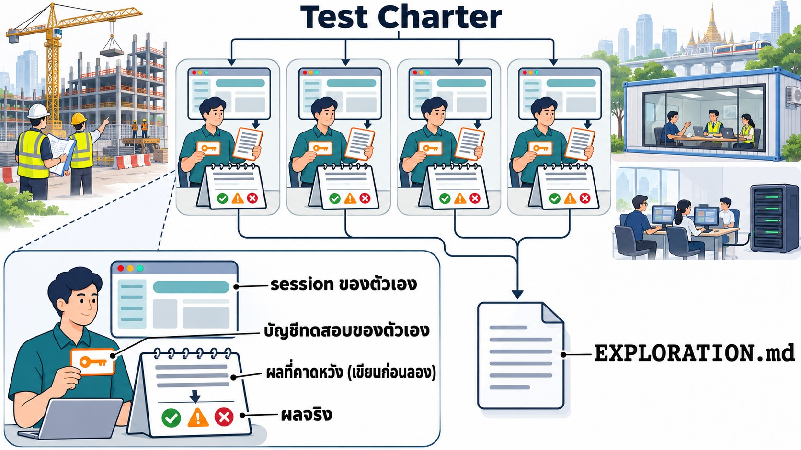
test/EXPLORATION.md พร้อมตารางความเสี่ยง P1 / P2 / P3พรอมต์ · ขั้นที่ 10 · Test Charter และ ExplorationCopy & Paste
01_sitesafe_inspectพรอมต์ทั้งหมด 6 บรรทัดเว็บ SiteSafe เปิดอยู่ที่ http://localhost:3410 ใช้ playwright-cli สำรวจ (ห้ามเปิดโค้ดใน ./app และห้ามเปิดไฟล์ BUGS-SECRET)
1. ดู Requirement ในโฟลเดอร์ ./docs และเดินดูเว็บ 1 รอบ แล้วเขียน Test Charter 4 ข้อไว้ที่ ./test/CHARTERS.md รูปแบบ "สำรวจ… ด้วย… เพื่อหา…" ทุก Business Rule ต้องมี Charter รับผิดชอบ
2. รีเซ็ตข้อมูลทดสอบ 1 ครั้ง แล้วสั่ง subagent 4 ตัวในข้อความเดียว (ไม่ใช้โหมดเบื้องหลัง) ตัวละ 1 Charter ตัวละ 1 session ของ playwright-cli และบัญชีทดสอบของตัวเอง เวลาไม่เกิน 10 นาทีต่อตัว
3. แต่ละตัวจดบันทึกไว้ในโฟลเดอร์ ./test/exploration: เขียนผลที่คาดหวังจาก Requirement ก่อนลอง แล้วบันทึกผลจริง ✅ ⚠️ ❌ พร้อมภาพหน้าจอ
4. รวมผลไว้ที่ ./test/EXPLORATION.md: ฟีเจอร์ที่พบ · กฎที่ยืนยันแล้ว · จุดที่เว็บไม่ตรง Requirement · ตารางความเสี่ยง P1 / P2 / P3
สรุปเป็นตารางภาษาไทย: Charter · เวลาที่ใช้ · จำนวนกฎที่ลอง · ✅ · ⚠️ · ❌ตรวจผลของคุณ · ขั้นที่ 10 · ExplorationChecklist
ผลจริง: ลอง 53 กฎ ผ่าน 46 ข้อ ต้องระวัง 6 ข้อ และไม่ตรง Requirement 1 ข้อประมาณ 11 นาที
Test Plan และการตรวจไขว้
ผลจริงของผู้สอน: (ประมาณ 15 นาที): Test Case 39 ข้อ · ผู้ตรวจพบ 38 ข้อ (สูง 23 · กลาง 11 · ต่ำ 4) · แก้ครบ
ผู้ตรวจ Test Plan ต้องไม่ใช่ผู้เขียน
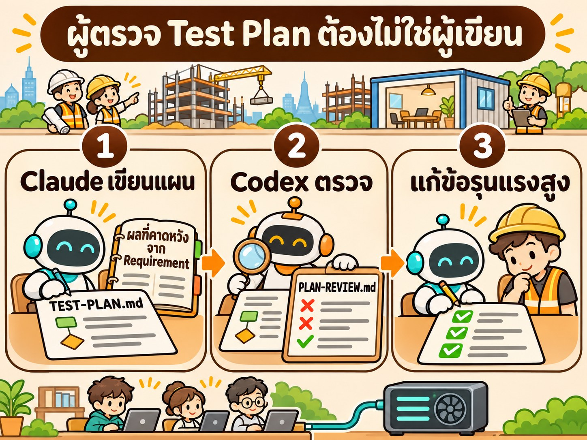
cyolo1) ผ่านสกิล agent-teamPLAN-REVIEW.md แล้วแก้แผนตามข้อที่รุนแรงสูงพรอมต์ · ขั้นที่ 11 · Test Plan และการตรวจไขว้Copy & Paste
01_sitesafe_inspectพรอมต์ทั้งหมด 8 บรรทัดจาก Requirement ข้อมูลทดสอบ และผล Exploration ในโฟลเดอร์ ./docs กับ ./test เขียน Test Plan ไว้ที่ ./test/TEST-PLAN.md
1. โครง 8 หัวข้อ: ภาพรวม · ขอบเขต · เทคนิค · ระดับ · Test Case · Entry/Exit Criteria · ข้อมูลทดสอบ · คุณภาพของแผน
2. Test Case 30–40 ข้อ แบ่งเป็นกลุ่ม 5.1–5.5 รหัส TC-<กลุ่ม>-<เลข> ทุกข้อมีขั้นตอน ผลที่คาดหวังที่คำนวณให้ดู ที่มา (FR/BR) และระดับ P1–P3
3. ผลที่คาดหวังต้องมาจาก Requirement ไม่ใช่จากที่เห็นบนเว็บ
4. ต้องมีกลุ่มของ AI และคิว: ผลตรวจของโมเดลกับกติกาผ่านหรือไม่ผ่าน · สถานะงานในคิว · คิวเต็ม · ไฟล์ที่ไม่รับ · สิทธิ์ของแต่ละบทบาท
5. ให้บัญชี cyolo1 ใน container `multi-account` ตรวจแผนผ่านสกิล agent-team (ผู้ตรวจต้องไม่ใช่ผู้เขียน): ตรวจได้จริงไหม ตัวเลขถูกไหม กำกวมไหม ซ้ำไหม
6. บันทึกผลตรวจไว้ที่ ./test/PLAN-REVIEW.md แล้วแก้แผนตามข้อที่รุนแรงสูง
สรุปเป็นตารางภาษาไทย: กลุ่ม · จำนวน TC · P1 · ข้อที่ผู้ตรวจพบ · ข้อที่แก้แล้วตรวจผลของคุณ · ขั้นที่ 11 · Test PlanChecklist
ผลจริง: Test Case 39 ข้อ ผู้ตรวจพบปัญหาในแผน 38 ข้อ และแก้ครบทุกข้อประมาณ 15 นาที
ข้อที่ผู้ตรวจพบ: สูง 23 · กลาง 11 · ต่ำ 4
cyolo1): ผู้ตรวจพบว่าแผนรุ่นแรกไม่มี Test Case ของตัวเฝ้ารูปค้าง 15 นาที และงบรูป 79 รูปไม่พอวัดโมเดลบน Test Set413Playwright Test และ Test Report
ผลจริงของผู้สอน: (ประมาณ 81 นาที): ผ่าน 27 · ล้ม 2 · บล็อก 10 จาก 39 ข้อ · ผลตัดสิน ยังส่งมอบไม่ได้
Playwright Test ตาม Test Plan แล้วคัดแยกข้อที่ล้มก่อนตัดสินผล
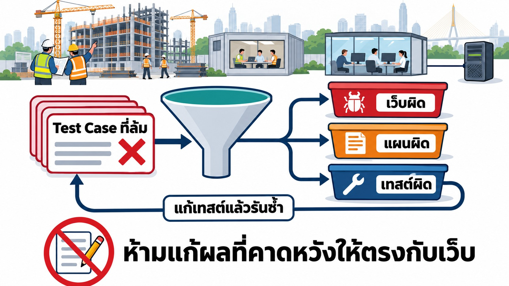
พรอมต์ · ขั้นที่ 12 · Playwright Test และ Test ReportCopy & Paste
01_sitesafe_inspectพรอมต์ทั้งหมด 7 บรรทัดเขียนและรัน Playwright Test ตาม Test Plan ในโฟลเดอร์ ./test กับเว็บที่ http://localhost:3410
1. สร้าง ./test/e2e ไฟล์ทดสอบ 1 ไฟล์ต่อกลุ่ม 5.x โดยสั่ง subagent ทุกตัวในข้อความเดียว (ไม่ใช้โหมดเบื้องหลัง) ตัวละ 1 กลุ่ม ระหว่างเขียนห้ามรันทั้งชุด
2. รันทั้งชุดบน Chromium 1 รอบ เก็บภาพหน้าจอและ trace ของข้อที่ล้ม
3. คัดแยกข้อที่ล้มเป็น: เว็บผิด · แผนผิด · เทสต์ผิด แก้เฉพาะ "เทสต์ผิด" แล้วรันซ้ำ ห้ามแก้ผลที่คาดหวังให้ตรงกับเว็บ
4. เขียน Test Report 6 ส่วนไว้ที่ ./test/TEST-REPORT.md และหน้า ./test/index.html ที่เปิดดูหลักฐานของแต่ละ Test Case ได้
5. ตัดสินตาม Exit Criteria ว่าส่งมอบได้หรือไม่
สรุปเป็นตารางภาษาไทย: กลุ่ม · ผ่าน · ล้ม · สาเหตุของข้อที่ล้ม แล้วบอกอัตราผ่านรวม อัตราผ่านของ P1 และผลตัดสินตรวจผลของคุณ · ขั้นที่ 12 · Playwright TestChecklist
ผลจริง: ผ่าน 27 ล้ม 2 และบล็อก 10 จาก 39 ข้อ ผลตัดสินคือยังส่งมอบไม่ได้ประมาณ 81 นาที
ข้อบกพร่อง 2 ข้อเป็นเว็บผิดระดับ P1 ทั้งคู่test/TEST-REPORT.md
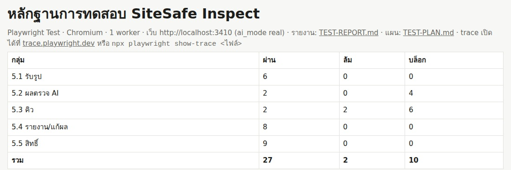
BUG-01 · TC-3-07
รูป 14.9 MB และ 15.0 MB ที่เว็บรับแล้วไม่ถูกตรวจ ค้าง "รอคิว" จนขึ้น "ตรวจไม่สำเร็จ · เกินเวลา 15 นาที" รูปอื่นในการอัปโหลดเดียวกันค้างตาม
BUG-02 · TC-3-08
ส่ง 20 รูป p95 ของเวลารอผล = 42.4 วินาที เกินเกณฑ์ 30 วินาที
ส่วนหนึ่งของหน้าหลักฐานจริง · หน้าเต็ม: image/test-report.png และ test/index.html
Bug Hunt และรายงานส่งมอบ
ชุดทดสอบที่ผ่านทุกข้อยังไม่พิสูจน์ว่าชุดทดสอบดี ขั้นนี้เปิดบั๊ก 3 ตัวที่ซ่อนไว้ตั้งแต่ขั้นที่ 3 แล้วดูว่าชุดทดสอบจับได้กี่ตัว
ผลจริงของผู้สอน: (ประมาณ 40 นาที): จับบั๊กได้ 2 จาก 3 ตัว · User Story ระดับ Must มีหลักฐานว่าผ่าน 9 จาก 16 เรื่อง
เปิดบั๊กที่ซ่อนไว้ 3 ตัว แล้วรันชุดทดสอบเดิมเพื่อดูว่าจับได้กี่ตัว
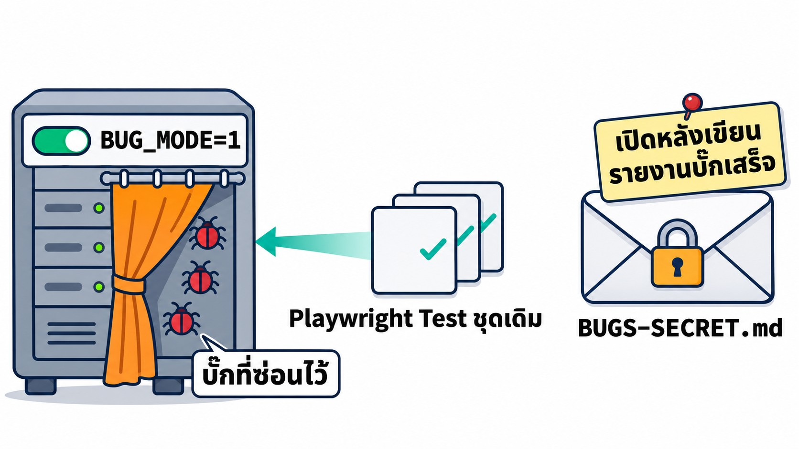
BUG_MODE=1 แล้วรัน Playwright Test ชุดเดิมDELIVERY.md สำหรับลูกค้า แล้วปิด BUG_MODEพรอมต์ · ขั้นที่ 13 · Bug Hunt และรายงานส่งมอบCopy & Paste
01_sitesafe_inspectพรอมต์ทั้งหมด 6 บรรทัดเปิดเว็บใหม่ด้วย BUG_MODE=1 แล้วรัน Playwright Test ชุดเดิมอีก 1 รอบ (ห้ามเปิดไฟล์ BUGS-SECRET จนกว่าจะเขียนรายงานบั๊กเสร็จ)
1. เทียบกับรอบปกติ: ข้อที่ล้มเพิ่มคือข้อใด แล้วสรุปเป็นบั๊กทีละตัวไว้ที่ ./test/BUG-HUNT.md พร้อมขั้นตอนทำซ้ำ ผลที่คาดหวัง ผลจริง และหลักฐาน
2. เขียนรายงานบั๊กเสร็จแล้วจึงเปิดไฟล์ BUGS-SECRET เทียบว่าจับได้กี่ตัวจาก 3 ตัว
3. เขียนรายงานส่งมอบสำหรับลูกค้าไว้ที่ ./DELIVERY.md: ตาราง User Story → Requirement → Test Case → ผล และสิ่งที่ยังไม่ผ่านหรือยังไม่ได้ทำ
4. ปิด BUG_MODE แล้วเปิดเว็บกลับเป็นโหมดปกติ
สรุปเป็นตารางภาษาไทย: บั๊ก · Test Case ที่จับได้ · ความรุนแรง แล้วบอกจำนวน User Story ระดับ Must ที่มีหลักฐานว่าผ่านตรวจผลของคุณ · ขั้นที่ 13 · Bug HuntChecklist
ไซต์ ข อัตราผ่าน 90.00% พอดี: รอบปกติขึ้นปกติ รอบเปิดบั๊กขึ้นต่ำกว่าเกณฑ์ภาพหน้าจอจริง
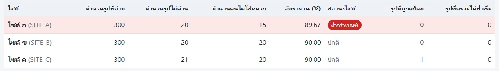
BUG_MODE=1 · ไซต์ ข ขึ้น "ต่ำกว่าเกณฑ์"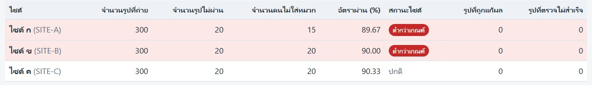
เทียบ 2 ภาพ: รอบปกติ (ภาพของขั้นที่ 10) ไซต์ ข 90.00% ขึ้น "ปกติ" · รอบเปิดบั๊กขึ้น "ต่ำกว่าเกณฑ์" เว็บใช้ "≤ 90" แทน "< 90" Test Case ที่ทดสอบค่าบนเส้นแบ่งพอดีจึงจับได้ · ภาพเต็ม: image/explore-report.png · image/bug-9000.png
ผลจริง: จับบั๊กได้ 2 จาก 3 ตัว และ Must มีหลักฐานว่าผ่าน 9 จาก 16 เรื่องประมาณ 40 นาที
BR-06 ขอเปิดอัปโหลด 51 รูปแล้วเว็บรับ (201 แทน 422)
Test Case ที่จับได้: TC-1-05 · ความรุนแรง สูง (P1)
BR-04 อัตราผ่าน 90.00% พอดีแสดงเป็นสีแดง
Test Case ที่จับได้: TC-4-01 และอีก 6 ข้อ · ความรุนแรง สูง (P1)
BR-02 ไม่ใส่เสื้อสะท้อนแสง 2 คนพอดี ได้ "เตือน" แทน "ไม่ผ่าน"
Test Case ที่จับได้: จับไม่ได้ · ความรุนแรง สูง (P1)
ลบเครื่องและสรุปค่าใช้จ่าย (ห้ามข้าม)
ผลจริงของผู้สอน: (ประมาณ 4 นาที) · ค่าเช่ารวม $0.76
พรอมต์ · ขั้นที่ 14 · ลบเครื่องและสรุปค่าใช้จ่ายCopy & Paste
01_sitesafe_inspectพรอมต์ทั้งหมด 6 บรรทัดทำงานใน container `multi-account` โฟลเดอร์ /workspace/vastapp_lab ด้วยสกิล vastai
1. คัดลอกน้ำหนักโมเดลและผลวัดที่ยังอยู่บนเครื่องป้าย e2e-sitesafe กลับมาที่ ./results/model
2. ลบเครื่องป้าย e2e-sitesafe แล้วตรวจซ้ำว่าไม่มีเครื่องป้ายนี้เหลืออยู่
3. หยุดเว็บและฐานข้อมูลบนเครื่องนี้
(ห้ามแตะเครื่องป้ายอื่น ห้ามแสดงค่า key)
สรุปค่าใช้จ่ายเป็นตารางภาษาไทย: เวลาที่เปิดเครื่อง · ค่าเช่ารวม · โทเคนรวมของทีมจากขั้นที่ 5 และ 6 แล้วยืนยันว่าเครื่องถูกลบแล้วตรวจผลของคุณ · ขั้นที่ 14 · ลบเครื่องChecklist
e2e-sitesafe ลบแล้ว · เหลือ 0 เครื่องผลจริง: ค่าเช่า GPU ทั้งหัวข้อ $0.76 และเวลาส่วนใหญ่เครื่องเปิดรอประมาณ 4 นาที
e2e-sitesafeสร้างสกิลเวอร์ชัน 0
14 ขั้นที่ผ่านมาคือ 14 พรอมต์ ขั้นนี้เก็บทั้งหมดเป็นสกิลเดียว เพื่อให้งานครั้งหน้าเริ่มจากบันทึกการสัมภาษณ์ 1 ไฟล์
ผลจริงของผู้สอน: (ประมาณ 5 นาที): สกิล 8 ไฟล์ · SKILL.md 107 บรรทัด · บันทึกกับดัก 19 ข้อ · สคริปต์ที่ใช้ได้แล้ว 5 ไฟล์
สกิลเก็บขั้นตอน คำสั่งจริง และกับดักที่เจอ แล้วหยุดถามคนก่อนใช้โทเคนและเงิน
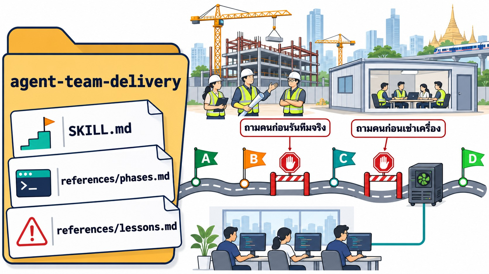
SKILL.md) · คำสั่งจริงและตัวเลขอ้างอิง (references/phases.md) · กับดักที่เจอจริง (references/lessons.md) เช่น "การรันต่อไม่รับบัญชีใหม่" และ "Test Set เล็กกว่าเกณฑ์ ให้ตอบว่ายังตัดสินไม่ได้"พรอมต์ · ขั้นที่ 15 · สร้างสกิลเวอร์ชัน 0Copy & Paste
01_sitesafe_inspectพรอมต์ทั้งหมด 8 บรรทัดสร้างสกิลชื่อ agent-team-delivery จากงานทั้ง 14 ขั้นที่เพิ่งทำในโฟลเดอร์ปัจจุบัน
1. ดู PROMPTS.md เอกสารใน ./docs แผนใน ./plan และผลใน ./results กับ ./test เป็นวัตถุดิบ แล้วเขียน SKILL.md ไว้ที่ ./skill_v0
2. สกิลรับบันทึกการสัมภาษณ์ 1 ไฟล์ แล้วทำ 4 ระยะ: Requirement → Planning → Build · Train · Deploy → Verification โดยเรียกสกิล dag-planner, agent-team และ vastai
3. ค่าที่ปรับได้พร้อมค่าเริ่มต้น: บัญชีที่ใช้ · จำนวน agent พร้อมกัน · รุ่น GPU และเพดานราคา · ป้ายเครื่อง · จำนวน Epoch · พอร์ตของเว็บ · ทำถึงระยะใด · โฟลเดอร์ผล
4. ต้องมีเกณฑ์ตรวจผ่านของแต่ละระยะ จุดที่ต้องถามคนก่อนทำต่อ (ก่อนรันทีมจริง และก่อนเช่าเครื่อง) และกติกาเรื่องเงิน
5. ติดตั้งสกิลไว้ที่ .claude/skills/agent-team-delivery ของโฟลเดอร์ปัจจุบัน
(ไม่ต้อง commit)
สรุปเป็นตารางภาษาไทย: ระยะ · สิ่งที่สกิลทำ · เกณฑ์ตรวจผ่าน · จุดที่ถามคนตรวจผลของคุณ · ขั้นที่ 15 · สกิลเวอร์ชัน 0Checklist
SKILL.md 107 บรรทัด · บันทึกกับดัก 19 ข้อ · สคริปต์ที่ใช้ได้แล้ว 5 ไฟล์ผลจริง: สกิล 8 ไฟล์ และแต่ละระยะมีเกณฑ์ตรวจผ่านกับจุดถามคนskill_v0/SKILL.md
SKILL.mdA · Requirement
ทุก User Story อ้างคำพูดลูกค้า · ทุก BR มีค่าต่ำกว่า เท่ากับ สูงกว่าเส้นแบ่ง · เกณฑ์ของโมเดลบอกจำนวนรูปขั้นต่ำของ Test Set
ถามคน: แจ้งจุดที่ลูกค้าขัดกันและข้อสมมติที่เลือก
B · Planning
ทุกบล็อกได้บัญชีที่อนุญาต · มี Critical Path และเวลารวม
ถามคน: ก่อนรันทีมจริง (ค่าเริ่มต้นของสกิลหยุดที่ระยะนี้)
C · Build · Train · Deploy
ทุกบล็อกเสร็จ · Acceptance Gate ตัดสินตามเกณฑ์จริง · ส่งรูปทั้งเส้นทางตรงกัน 5/5 · คิว 20 งานไม่หาย
ถามคน: ก่อนรันต่อบล็อกที่ล้ม · ก่อนเช่าเครื่อง · ก่อนค่าเช่าเกิน 80% ของงบ
D · Verification
ทุก FR มี Test Case · ตัดสินตาม Exit Criteria · BUG_MODE กลับเป็น 0 · เครื่องเหลือ 0 เครื่อง
ถามคน: ก่อนรอบทดสอบที่ใช้รูปเกินงบ GPU
ลองใช้สกิล
ผลจริงของผู้สอน: (ประมาณ 6 นาที): คำสั่งเดียวได้เอกสารระยะ A 5 ไฟล์และแผน 10 บล็อก แล้วหยุดรอคนอนุมัติ
แผนจากสกิลสั้นลงเกือบครึ่ง: 112.5 นาที เหลือ 60.6 นาทีภาพจริง plan/ และ results/skill_v0_run/
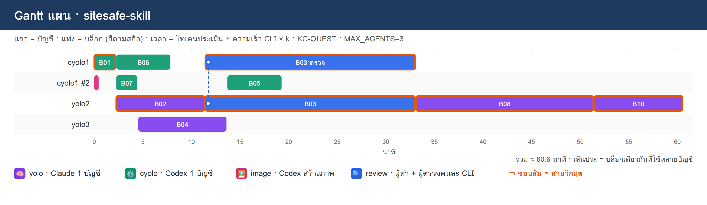
แผนสั้นลงเกือบครึ่ง เพราะใช้ตัวปรับเวลา k ที่วัดจากการรันจริงของขั้นที่ 5–6 ไม่ใช่เพราะงานน้อยลง
พรอมต์ · ขั้นที่ 16 · ลองใช้สกิลCopy & Paste
01_sitesafe_inspectพรอมต์ทั้งหมด 4 บรรทัดใช้สกิล agent-team-delivery กับบันทึกการสัมภาษณ์ใน ./INTERVIEW.md
ทำถึงระยะ Planning เท่านั้น · บัญชี yolo2, yolo3, cyolo1 · agent พร้อมกันไม่เกิน 3 · ชื่อแผน sitesafe-skill · โฟลเดอร์ผล ./results/skill_v0_run
(ห้ามรันทีมจริง ห้ามเช่าเครื่อง)
สรุปเป็นตารางภาษาไทย: เทียบกับรอบที่ทำทีละขั้น: จำนวน User Story · FR · BR · จำนวนบล็อก · Critical Path · เวลารวมของแผนตรวจผลของคุณ · ขั้นที่ 16 · ลองใช้สกิลChecklist
ทำทีละขั้นเทียบกับใช้สกิล: คำสั่งเดียวได้เอกสารและแผน แล้วหยุดรอคนอนุมัติตารางหลัก
| เรื่อง | ทำทีละขั้น (ขั้นที่ 1–4) | ใช้สกิล |
|---|---|---|
| เวลาที่ใช้ | ประมาณ 18 นาที (4 พรอมต์) | ประมาณ 6 นาที (1 พรอมต์) |
| จำนวน User Story | 20 | 25 |
| FR · BR | 22 · 7 | 24 · 10 |
| จำนวนบล็อก | 10 | 10 |
| Critical Path | B01 → B02 → B03 → B08 → B10 | เหมือนกัน |
| เวลารวมของแผน | 112.5 นาที | 60.6 นาที |
ภาพรวมผล: ระบบสร้างได้ครบ แต่หลักฐานว่าทำตามที่ลูกค้าขอยังไม่ครบREADME
16 ขั้นของหัวข้อ และไฟล์ที่ได้จากแต่ละขั้นตารางหลัก
| ระยะ | ขั้น | ทำอะไร | ไฟล์ที่ได้ |
|---|---|---|---|
| A · Requirement | 1 | User Story จากบันทึกการสัมภาษณ์ | docs/USER-STORIES.md |
| 2 | Requirement: FR · BR · NFR · เกณฑ์ของโมเดล · SLO | docs/REQUIREMENTS.md | |
| 3 | System Design และข้อมูลทดสอบ | docs/DESIGN.md · docs/TEST-DATA.md | |
| B · Planning | 4 | แตกงานเป็นบล็อก วาด DAG และ Gantt | plan/ |
| C · Build · Train · Deploy | 5 | Agent Team สร้างระบบตามแผน | app/ · plan/REPORT.md |
| 6 | รันต่อเฉพาะบล็อกที่ยังไม่เสร็จ | app/ · plan/REPORT.md | |
| 7 | เช่า GPU และเตรียม Dataset | results/dataset_samples.jpg | |
| 8 | เทรนโมเดล และตัดสินด้วย Acceptance Gate | results/model/ | |
| 9 | Deployment และทดสอบทั้งเส้นทาง | results/deploy/ | |
| D · Verification | 10 | Test Charter และ Exploration พร้อมกัน | test/CHARTERS.md · test/EXPLORATION.md |
| 11 | Test Plan และการตรวจไขว้ | test/TEST-PLAN.md · test/PLAN-REVIEW.md | |
| 12 | Playwright Test และ Test Report | test/TEST-REPORT.md · test/index.html | |
| 13 | Bug Hunt และรายงานส่งมอบ | test/BUG-HUNT.md · DELIVERY.md | |
| 14 | ลบเครื่องและสรุปค่าใช้จ่าย (ห้ามข้าม) | — | |
| ปิดท้าย | 15 | สร้างสกิลเวอร์ชัน 0 | skill_v0/ |
| 16 | ลองใช้สกิล (ถึงระยะ Planning) | results/skill_v0_run/ |
บทเรียนจากหัวข้อนี้
ข้อจำกัด และสิ่งที่ยังไม่ผ่าน
Acceptance Gate ยังตัดสินไม่ได้
Test Set มีรูปที่มีคนไม่ใส่หมวก 25 รูป เกณฑ์ต้องการอย่างน้อย 100 รูป
BUG-01 · รูปค้าง "รอคิว"
รูป 14.9 MB และ 15.0 MB ค้างจนขึ้น ตรวจไม่สำเร็จ · เกินเวลา 15 นาที
BUG-02 · เกิน SLO
ส่ง 20 รูป p95 ของเวลารอผล = 42.4 วินาที เกินเกณฑ์ 30 วินาที
10 Test Case ถูกบล็อก
ต้องใช้ตัวตรวจจำลองอีกชุด หรือเป็นรอบ B ที่ต้องขออนุมัติงบแยก
บั๊ก BR-02 จับไม่ได้
ไม่ใส่เสื้อสะท้อนแสง 2 คนพอดี ได้ "เตือน" แทน "ไม่ผ่าน"
ข้อสมมติยังไม่ได้รับการยืนยัน
เช่น พอดี 2 คนไม่ใส่เสื้อ → ไม่ผ่าน · Precision ≥ 0.80 · เพดานไฟล์ 15 MB
ยังส่งมอบไม่ได้ พร้อมรายการที่ต้องแก้
รายละเอียดเต็มของหัวข้อนี้: README.md · พรอมต์ทั้งหมด: PROMPTS.md · รายงานส่งมอบ: DELIVERY.md